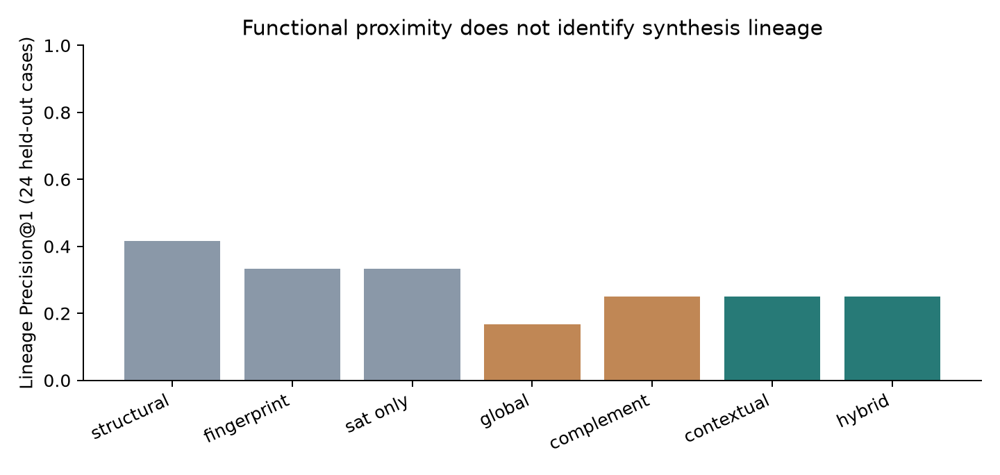
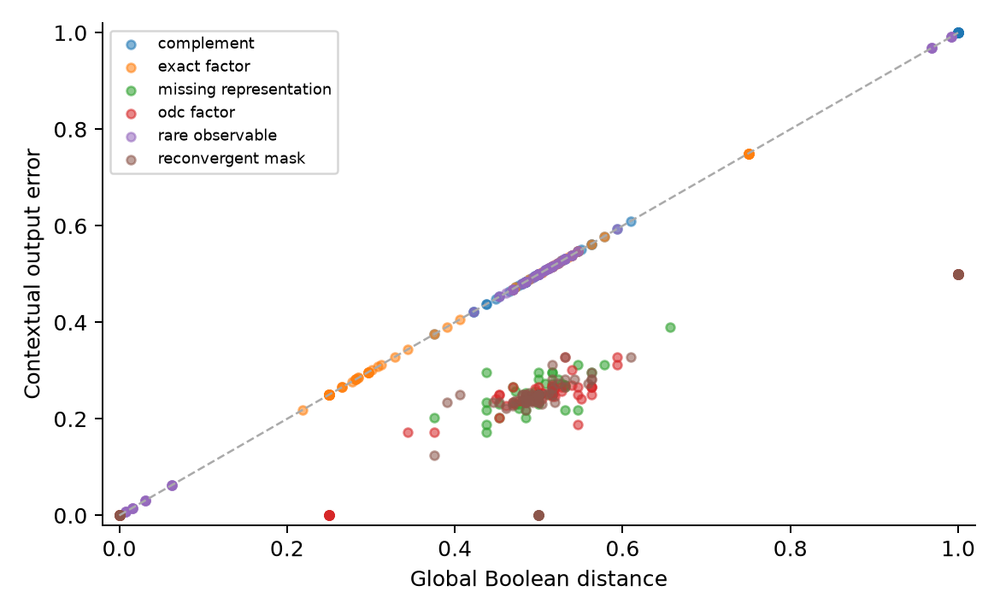

Research study · 22 October 2026
From approximate computing to exact correspondence
Measure internal disagreement. Ask whether it is observable. Use that information to guide an exact proof.
01 · The correspondence problem
Same outputs, different internal functions
AIG rewriting, factoring, resubstitution, and don’t-care optimization can remove or invent internal functions.
02 · Evidence hierarchy
Three different questions
Functional similarity
How frequently do two internal functions disagree?
Useful as a candidate feature.
Historical lineage
Which source function actually led to this optimized target?
Requires independent construction or provenance evidence.
Exact contextual replacement is a third claim: the outputs remain unchanged after substitution.
03 · Integrity audit
The measurement had to be repaired first
ABC’s output-0 BLIF covers were interpreted as constant zero by the old simulator and encoder.
Fixed stratified replay; regenerated pairs lack old artifact hashes. The complete historical 2,609-row pool is not revalidated.
04 · Approximate-computing connection
Global error and contextual error
The candidate cone is cloned from source primary inputs into the actual optimized consumer context.
Uniform independent primary inputs. Output Hamming, MAE, and WCE are also measured under an explicit output encoding.
05 · Observability don’t-cares
Disagreement matters where it is observable
y = t ∧ ¬b
The source uses y = s ∧ ¬b.
Pointwise identity
Disagreement and observability can be dependent. Multiplying their average probabilities gives the wrong answer.
06 · Adversarial negative
Rare does not mean safe
s = a ⊕ r · t = a · y = t ⊕ r
Substituting s for t makes every rare disagreement observable.
07 · Measurement contract
Exact counts, estimates, and proofs
Completed exact study
- Exhaustive PI truth vectors
- Independent scalar oracle
- Z3 equality / output miters
- Fresh ABC CEC for graph acceptance
Sampling calibration
- 1,024 IID uniform samples
- Seeds 7, 19, 41
- Pointwise 95% Hoeffding intervals
- No equivalence claim from sampled zero
Ordinary SAT finds a counterexample or proves equality; nonzero probabilities here come from exhaustive counting.
08 · Experimental setup
Small, disclosed experimental denominators
- Lineage study: six-input development, eight-input width holdout.
- Diagnostics: generated adder, multiplier, ISCAS c17; balance and dc2.
- Reconstruction: dc2 development, resyn2 flow holdout.
Controlled labels and standard-netlist diagnostics stay separate. Paths are structural proxies; no new external RTL result is claimed.
09 · Held-out ranking
Similarity is weak evidence of ancestry

Hybrid P@1: 25.0%; structural P@1: 41.7%; global-distance P@1: 16.7%. Contextual and hybrid features do not beat the structural baseline on this suite.
10 · Exact error analysis
Context changes the interpretation

Points below the diagonal have masked differences. Zero-context candidates can still have substantial global disagreement. This establishes interchangeability, not ancestry.
11 · Reconstruction algorithm
Approximate order, exact acceptance
- Freeze the same ≤176 source-derived unary/binary proposals.
- Rank by disagreement on eight sampled assignments.
- Test exact equality under a fixed check budget.
- Emit an active replacement and require both CEC scopes.
Candidate-pool hashes, budgets, seeds, proof calls, failures, and artifacts are recorded for both orderings.
The default full grammar remains available. This experiment uses its unary/binary subset and still computes bounded exhaustive proposal vectors.
12 · Reconstruction results
A search-ordering gain; unchanged full-budget recovery

At budget 1: guided 1/10 development and 1/8 holdout; enumeration 0. At full budget: both recover the same target set. The two accepted flow instances share one distinct rewritten graph.
13 · Critical-path back-mapping
What the path diagnostic does and does not show
No historical-lineage precision is computed for these targets. The diagnostic provides a contextual observation and a null result for global near-match coverage.
14 · Research interpretation
Conclusions and the next decisive experiment
- Approximate-computing metrics explain internal relationships.
- Observability separates harmless differences from rare observable errors.
- Approximation can prioritize an exact reconstruction search.
- Similarity alone does not establish historical correspondence.
15 · Research artifacts
Reproduce, inspect, and share
make approx-correspondence · make check-approx-correspondence · make approx-correspondence-pdf